Key Takeaways
- Understand why User settings (legacy) policy creation is being disabled in Windows 365 Cloud PC Settings.
- Explore the transition from User settings (legacy) to the new configuration experiences.
- Learn how to replicate legacy user settings using New Cloud PC Configuration Settings.
- Understand how to configure the corresponding settings through Windows App Settings.
- Review the migration considerations and steps to ensure existing user configurations continue to work as expected.
In this article, I will discuss why the creation of User Settings policies is disabled in Windows 365 Cloud PC Settings. Users can no longer create new User Settings, but they can still edit and delete existing ones. All functionality related to User Settings has now been consolidated under Cloud PC Configurations and Windows App Settings. It’s important to migrate your existing settings policies to these new areas. Let’s explore how to replicate the same settings using Cloud PC Configuration and Windows App Settings together in Intune.
Table of Content
Legacy Windows 365 User Settings in Intune
Here is a screenshot of the legacy User Settings Policy that was previously available in my Microsoft Intune tenant. The legacy user settings have now been transitioned to two new categories: Cloud PC Configuration and Windows App Settings. Let’s explore how we can replicate the functionality of the legacy settings using these new options in Intune.
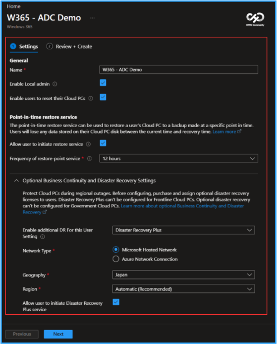
Create a New Cloud PC Configuration in Intune
To set up a new Cloud PC Configuration using Microsoft Intune, follow these steps. First, sign in to the Microsoft Intune Admin Center with your administrator credentials.
- Navigate to Devices > Manage Windows 365 Cloud PCs > Cloud PC Settings
- Click on +Create > Cloud PC configurations
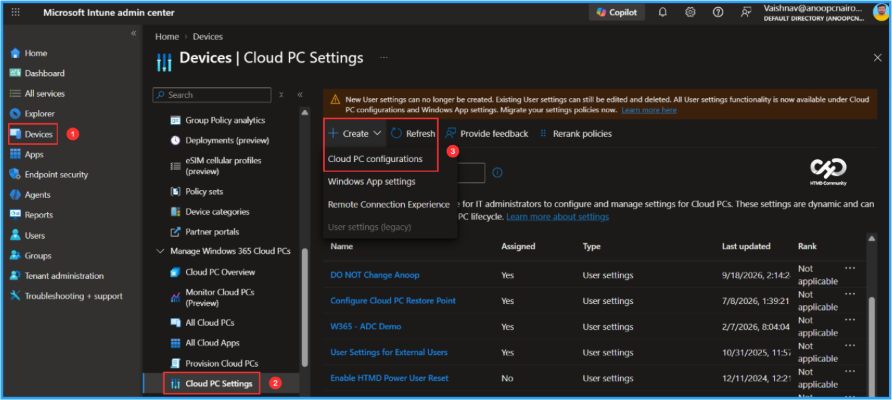
In the Basics details pane, name the Cloud PC configuration policy as “New Cloud PC Configuration Settings.” It is also helpful to provide a brief description of the policy’s purpose. After that, click Next.
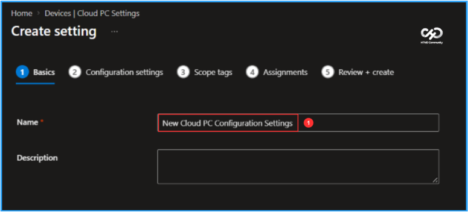
In Configuration settings, you can select several user settings. Select the settings to apply. If the option is set to “Not Configured” (default), this policy does not specify a value. Therefore, system defaults will apply unless another applicable policy provides a specific configuration. Below are the available options corresponding to legacy user settings.
- Enable Local admin (Enabling this setting elevates end user to local administrator on all their Cloud PCs.): Enable
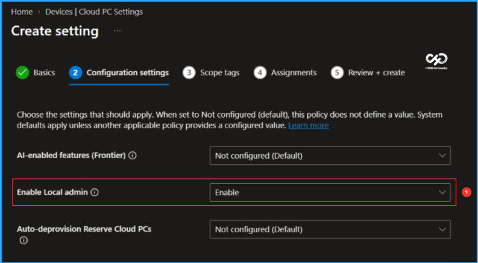
Additionally, here are other options under Business Continuity and Disaster Recovery: Point-in-Time Restore, Cross-Region Disaster Recovery, and Disaster Recovery Plus that we can utilize. Below are the settings that I configured in this example.
- Point-in-time restore: Enable
- Frequency of restore-point service: 12 hours
- Cross-Region Disaster Recovery: Enable
- Frequency of restore-point service: 12 hours
- Network: Microsoft hosted network
- Geography: India
- Region groups/regions: India/Central India
- Disaster Recovery Plus: Enable
- Network: Microsoft hosted network
- Geography: India
- Region groups/regions: India/Central India
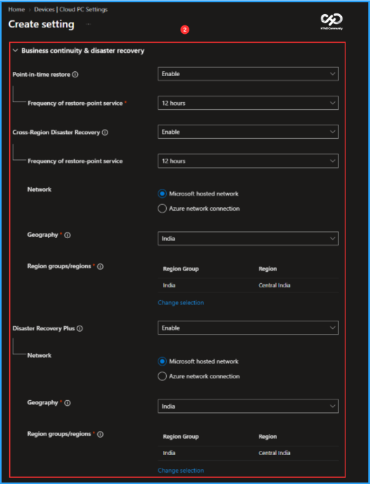
On the next pane, keep the Scope tags set to Default. If your tenant has custom scope tags, select them based on your policy needs, then click Next.

I am assigning the configuration policy to the Windows 365 Cloud PCs – Settings. This Entra ID group includes users who require this specific configuration. To proceed, click on Add groups and select the desired user group in the Select groups section.

On the Review + create page, carefully examine all the settings you’ve specified for the New Cloud PC Configuration Settings. Once you’ve confirmed that everything is accurate, select Create to deploy.
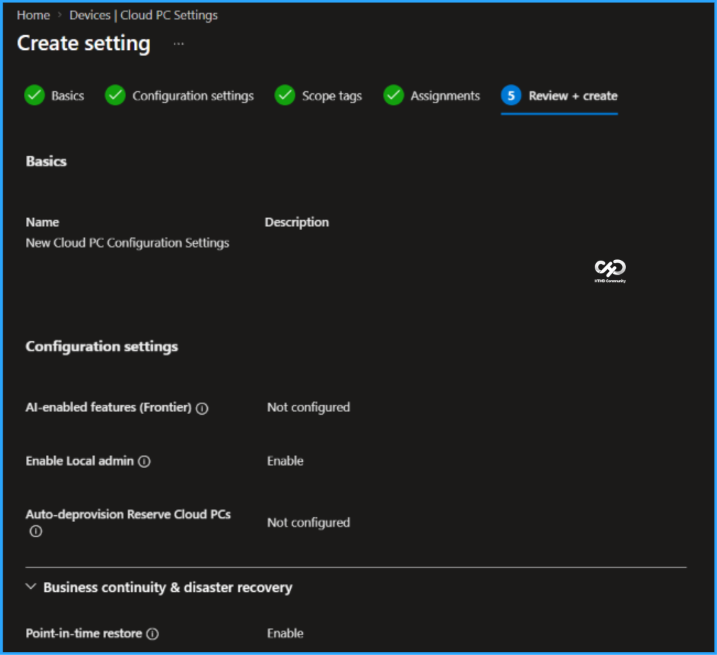
Create a New Cloud PC Configuration in Intune
To configure a new Windows App settings for Windows 365, log in to the Microsoft Intune Admin Center using your administrator credentials.
- Navigate to Devices > Manage Windows 365 Cloud PCs > Cloud PC Settings
- Click on +Create > Windows App settings
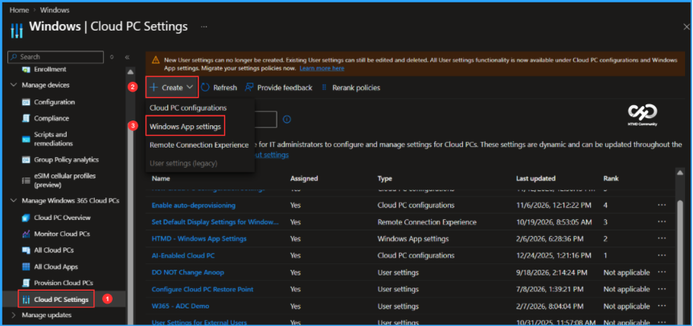
In the Basics details pane, name the new settings “New Windows App Settings” and provide a brief description. After that, click Next.
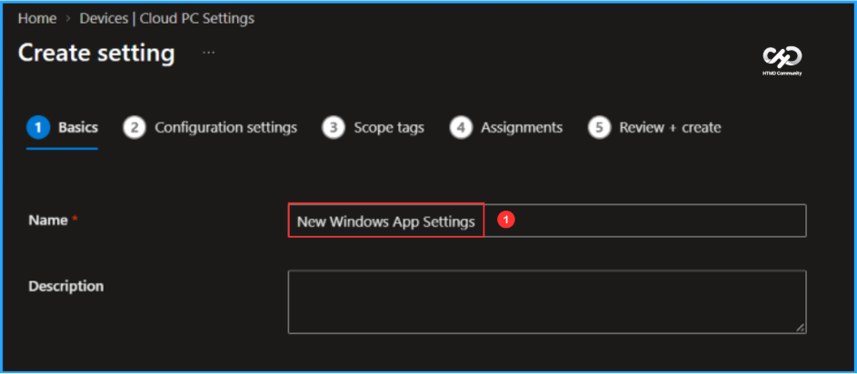
In the Configuration settings, the options for User self-service actions are initially set to Not configured. Click on each of the options below corresponding to User Settings to configure them.
Note: Choose which user self service actions are available to users when using the Windows app. These settings apply across all Cloud PC and Cloud apps for a user. These settings apply on both managed and unmanaged devices.
- Enable users to reset their Cloud PC: Enable
- Allow users to initiate a Restore: Enable
- Allow users to initiate Disaster Recovery Plus service: Enable
- Enable users to provision new Cloud PC instances: Enable
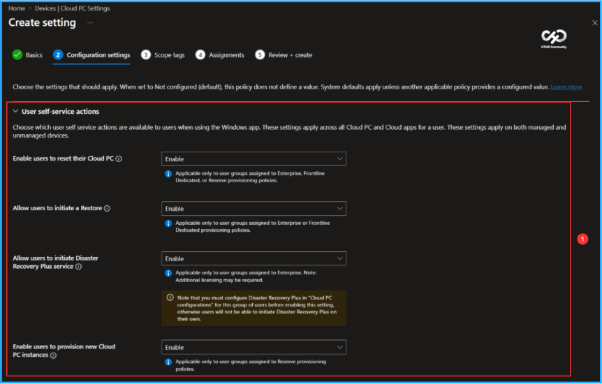
On the next pane, keep the scope tags set to default. If your tenant has custom scope tags, choose them based on your settings needs, then click Next.
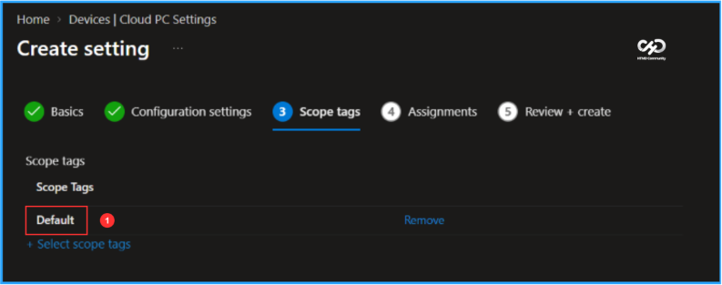
I am assigning the configuration policy to the same group to which we assigned the Windows 365 Cloud PC configurations. This Entra ID group consists of users who require this configuration. To do this, click on Add groups and select the appropriate user group under the Select groups section.
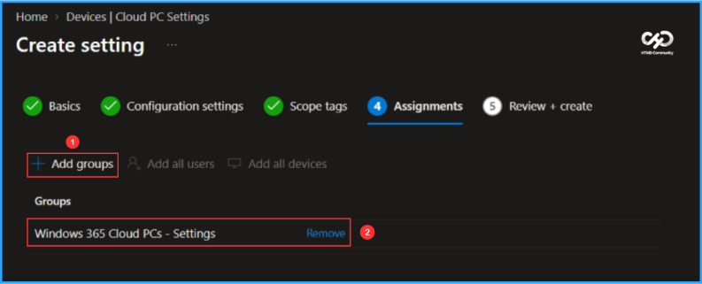
On the Review + create page, carefully check all the settings you defined for the New Windows App Settings. Once you have verified that everything is correct, click on Create to deploy the app. Now, we have successfully replicated all the user settings (legacy) in this new setup.
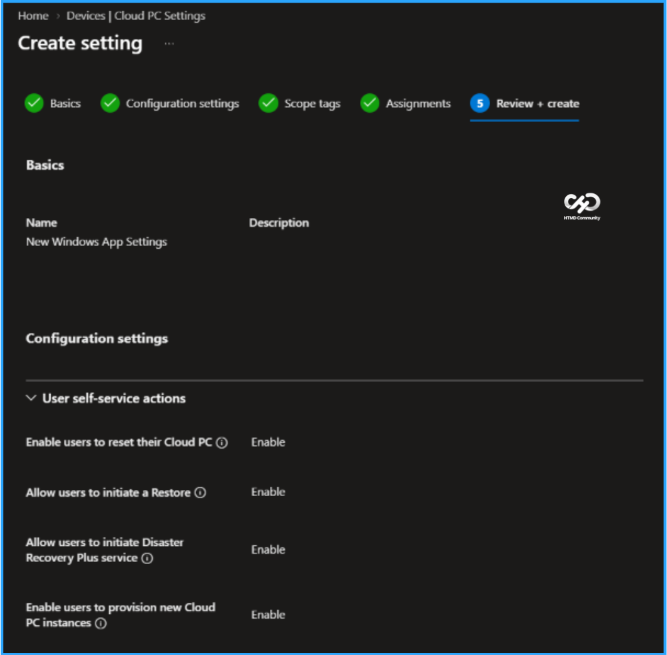
Need Further Assistance or Have Technical Questions?
Join the LinkedIn Page and Telegram group to get the latest step-by-step guides and news updates. Join our Meetup Page to participate in User group meetings. Also, join the WhatsApp Community to get the latest news on Microsoft Technologies. We are there on Reddit as well.
Author
Vaishnav K has over 13 years of experience in SCCM, Intune, Modern Device Management, and Automation Solutions. He writes and shares knowledge about Microsoft Intune, Windows 365, Azure, Entra, PowerShell Scripting, and Automation. Check out his profile on LinkedIn.